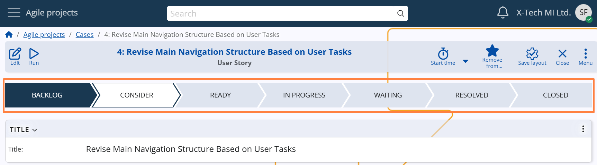

Workflow states
System States
Each Case progresses through a predefined set of System States, reflecting its current stage in the workflow. These states guide users through the lifecycle of the task — from initial planning to resolution and closure.
The standard System States are:
Backlog → Consider → Ready → In Progress → Waiting → Resolved → Closed
- Backlog – the initial state where the Case is drafted. It typically contains a description of the issue or request.
- Consider – used for analysis, planning, or review before committing to work.
- Ready – signals that the Case is approved and ready to be started.
- In Progress – indicates that work on the Case has begun.
- Waiting – temporarily halts progress, usually due to pending feedback or external dependencies.
- Resolved – work on the Case is completed, awaiting final review or closure.
- Closed – the Case is finalized. Once closed, it becomes read-only and cannot be edited.

Note
Some System States may be hidden in the Case form, depending on the Case Category configuration.
For details, see Case Categories –> Advanced Settings –> Visibility of System States.
Users can move Cases forward or backward between states, depending on workflow permissions and process requirements.
Note
A Case must always transition through Resolved before it can be Closed, ensuring that all necessary work is reviewed and finalized before the Case becomes final and read-only.
User States
While System States define the main lifecycle stages, User States provide more granular control and reflect the internal processes within each stage.
When a System State has applicable User States (based on the Case Category), the user is prompted to select a sub-stage from a dropdown menu when changing the Case state.
This allows users to add more context, such as:
- "For approval" or "Needs a meeting" for the Consider state
- "Ready for design" or "Ready for execution" for the Ready state
- "Completed" or "Rejected" for the Resolved state
This functionality helps teams reflect the true status of work more precisely, without modifying the core state logic.
Note
User States are optional and appear only when defined for the selected System State and Case Category.
For configuration details and setup instructions, see User States.